CODING AGENTS AS PIXEL WORLD MODELS
traex/GPT-5.6-Sol · 0124
点击播放 · 原生 RGB 像素
逐轮保存的候选
回放视频、检查图与代码变化。
每份候选均可单独播放。实际图片检查记录在下方工具轨迹中。
候选 01播放与检查图
点击播放 · 原生 RGB 像素
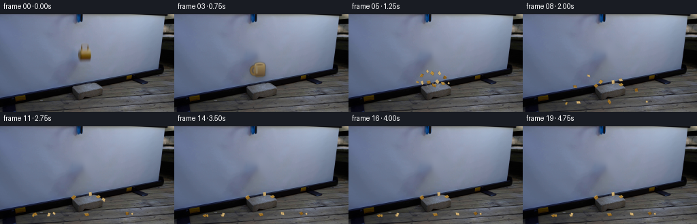
展开代码变化
--- 上一保存版本
+++ 本次保存版本
@@ -0,0 +1,213 @@
+from pathlib import Path
+import math
+import cv2
+import numpy as np
+from PIL import Image, ImageDraw, ImageFilter
+import artifact_io
+
+CASE_DIR = Path(__file__).resolve().parent
+W, H = 256, 144
+N, FPS = 20, 4
+
+
+def make_clean_plate(src):
+ """Remove only the suspended cup from the locked camera plate."""
+ mask = np.zeros((H, W), np.uint8)
+ # Full blurred silhouette and its soft cast shadow.
+ cv2.ellipse(mask, (123, 58), (15, 18), 0, 0, 360, 255, -1)
+ cv2.rectangle(mask, (115, 42), (133, 70), 255, -1)
+ mask = cv2.dilate(mask, np.ones((3, 3), np.uint8), iterations=1)
+ plate = cv2.inpaint(src, mask, 5, cv2.INPAINT_TELEA)
+ # Projection-screen texture is extremely low-frequency. A softly cloned
+ # local patch suppresses the slight inpaint swirl while retaining its light falloff.
+ smooth = cv2.GaussianBlur(plate, (0, 0), 3.0)
+ soft = cv2.GaussianBlur(mask, (0, 0), 4.0).astype(np.float32) / 255.0
+ soft = soft[..., None] * 0.42
+ plate = np.clip(plate * (1-soft) + smooth * soft, 0, 255).astype(np.uint8)
+ return plate
+
+
+def layer_rgba(base, overlay):
+ b = Image.fromarray(base, 'RGB').convert('RGBA')
+ b.alpha_composite(overlay)
+ return np.asarray(b.convert('RGB'), dtype=np.uint8)
+
+
+def draw_mug(base, cx, cy, angle=0.0, crack=False, motion=0.0):
+ """Small glazed ochre mug, matching the soft focus and scale in frame zero."""
+ S = 4
+ size = 38 * S
+ mug = Image.new('RGBA', (size, size), (0, 0, 0, 0))
+ # Shadow on the projection screen, rendered separately and following the object.
+ sh = Image.new('RGBA', (W*S, H*S), (0,0,0,0))
+ sd = ImageDraw.Draw(sh)
+ sx, sy = int((cx-1)*S), int((cy+5)*S)
+ sd.ellipse((sx-12*S, sy-10*S, sx+13*S, sy+12*S), fill=(29,25,27,57))
+ sh = sh.filter(ImageFilter.GaussianBlur(3.0*S))
+ sh = sh.resize((W,H), Image.Resampling.LANCZOS)
+ out = layer_rgba(base, sh)
+
+ d = ImageDraw.Draw(mug)
+ ox = oy = size//2
+ # Handle at the left of the cup: dark inner opening and glazed outer rim.
+ d.ellipse((ox-13*S, oy-5*S, ox-1*S, oy+10*S), fill=(126,92,34,255))
+ d.ellipse((ox-10*S, oy-2*S, ox-3*S, oy+7*S), fill=(74,64,52,230))
+ d.ellipse((ox-8*S, oy-1*S, ox-3*S, oy+6*S), fill=(139,109,59,160))
+ # Body, slightly tapered toward the base.
+ body = [(ox-6*S,oy-7*S),(ox+9*S,oy-7*S),(ox+10*S,oy-4*S),
+ (ox+9*S,oy+9*S),(ox+6*S,oy+12*S),(ox-4*S,oy+12*S),
+ (ox-7*S,oy+8*S)]
+ d.polygon(body, fill=(145,108,35,255))
+ # Warm vertical glaze gradient.
+ for yy in range(-6*S, 11*S):
+ q=(yy+6*S)/(17*S)
+ col=(int(171-77*q), int(140-78*q), int(76-52*q), 245)
+ xleft = ox-6*S + int(max(0,yy-7*S)*0.05)
+ xright= ox+9*S - int(max(0,yy-7*S)*0.04)
+ d.line((xleft,oy+yy,xright,oy+yy), fill=col, width=1)
+ # Lip and top opening.
+ d.ellipse((ox-6*S,oy-9*S,ox+9*S,oy-4*S), fill=(181,151,93,255))
+ d.ellipse((ox-5*S,oy-8*S,ox+8*S,oy-5*S), fill=(102,74,32,255))
+ d.arc((ox-5*S,oy-8*S,ox+8*S,oy-4*S), 185, 355, fill=(215,190,133,255), width=S)
+ # Narrow highlight and darker base.
+ d.rounded_rectangle((ox-4*S,oy-4*S,ox-2*S,oy+7*S), radius=S, fill=(191,155,81,100))
+ d.line((ox-4*S,oy+10*S,ox+6*S,oy+10*S), fill=(73,48,18,210), width=2*S)
+ if crack:
+ d.line((ox+2*S,oy-4*S,ox*S//S+1*S,oy+2*S,ox+5*S,oy+5*S,ox+2*S,oy+9*S),
+ fill=(68,47,25,245), width=max(2,S//2))
+ # Slight optical softness matches source footage.
+ mug = mug.filter(ImageFilter.GaussianBlur(0.55*S))
+ if motion > 0:
+ # Exposure blur along vertical fall: stack faint neighboring copies.
+ canv = Image.new('RGBA', mug.size, (0,0,0,0))
+ for off, a in [(-motion,55),(0,160),(motion,55)]:
+ tmp = mug.copy()
+ alpha=np.asarray(tmp.getchannel('A'),dtype=np.float32)*(a/270.0)
+ tmp.putalpha(Image.fromarray(np.clip(alpha,0,255).astype(np.uint8)))
+ canv.alpha_composite(tmp,(0,int(off*S)))
+ mug=canv
+ mug = mug.rotate(angle, resample=Image.Resampling.BICUBIC, expand=False)
+ mug = mug.resize((38,38), Image.Resampling.LANCZOS)
+ ov = Image.new('RGBA',(W,H),(0,0,0,0))
+ ov.alpha_composite(mug,(int(round(cx-19)),int(round(cy-19))))
+ return layer_rgba(out,ov)
+
+
+# Fragments use deterministic rigid-body trajectories integrated against the brick and floor.
+FRAGMENTS = [
+ # x,y, vx,vy, w,h, angle, spin, face (0 exterior, 1 pale broken ceramic)
+ (-7,-4,-41,-39,6,4,-10,-155,0), (-3,-7,-25,-52,5,3,15,190,1),
+ ( 1,-6,-11,-44,5,6,-4,-120,0), ( 5,-5, 14,-48,6,4,23,165,1),
+ ( 8,-2, 34,-36,5,5,-12,205,0), (-8, 2,-35,-20,4,6,35,-175,1),
+ (-3, 3,-17,-27,6,5,-25,120,0), ( 3, 3, 10,-30,5,6,12,-145,1),
+ ( 7, 4, 27,-23,6,4,-15,180,0), ( 0, 5, 2,-17,7,4,5,95,0),
+ (10, 2, 48,-18,3,3,0,250,1), (-11,0,-50,-16,3,4,0,-230,0),
+]
+
+
+def brick_top(x):
+ if x < 104 or x > 152: return None
+ if x <= 134: return 108.0 - 6.0*(x-104.0)/30.0
+ return 102.0 + 6.0*(x-134.0)/18.0
+
+
+def floor_y(x):
+ # Floorboards recede gently upward to the right in this camera view.
+ return 132.0 - 0.020*(x-128.0)
+
+
+def particle_state(spec, t):
+ rx,ry,vx,vy,w,h,a,spin,face=spec
+ x=125.0+rx; y=101.0+ry
+ dt=1/120
+ elapsed=0.0
+ restitution=0.38
+ while elapsed < t-1e-9:
+ step=min(dt,t-elapsed)
+ oldy=y
+ vy += 96.0*step
+ x += vx*step; y += vy*step
+ top=brick_top(x)
+ if top is not None and vy>0 and oldy <= top-1 and y+h*.35 >= top:
+ y=top-h*.35
+ vy=-abs(vy)*restitution
+ vx*=0.76; spin*=0.72
+ if abs(vy)<8: vy=0
+ fy=floor_y(x)
+ if vy>0 and y+h*.45>=fy:
+ y=fy-h*.45
+ vy=-abs(vy)*0.28
+ vx*=0.67; spin*=0.62
+ if abs(vy)<7: vy=0
+ # friction once essentially resting
+ if vy==0:
+ vx*=max(0,1-3.0*step)
+ elapsed += step
+ return x,y,a+spin*t,w,h,face
+
+
+def polygon_fragment(draw, x,y,w,h,ang,fill,edge):
+ ca=math.cos(math.radians(ang)); sa=math.sin(math.radians(ang))
+ pts0=[(-w*.55,-h*.32),(w*.28,-h*.56),(w*.57,h*.18),(-w*.18,h*.55)]
+ pts=[(x+px*ca-py*sa,y+px*sa+py*ca) for px,py in pts0]
+ draw.polygon(pts,fill=fill)
+ draw.line(pts+[pts[0]],fill=edge,width=1)
+ # Bright irregular fracture edge.
+ draw.line([pts[0],pts[1]],fill=(218,194,143,220),width=1)
+
+
+def draw_shatter(base, t):
+ S=4
+ ov=Image.new('RGBA',(W*S,H*S),(0,0,0,0))
+ d=ImageDraw.Draw(ov,'RGBA')
+ # Brief impact dust/chalk specks, strongest just after contact.
+ if t < 0.8:
+ strength=max(0,1-t/0.8)
+ for k in range(15):
+ theta=(k*2.399)+0.4
+ r=(5+17*t)*(0.35+(k%5)/5)
+ x=(125+math.cos(theta)*r)*S
+ y=(104-3*t+math.sin(theta)*r*.34)*S
+ rad=(0.7+(k%3)*.38)*S*(0.7+strength*.3)
+ d.ellipse((x-rad,y-rad,x+rad,y+rad),fill=(190,184,168,int(65*strength)))
+ # Tiny chips omitted after they have settled visually into the floor texture.
+ for j,spec in enumerate(FRAGMENTS):
+ x,y,a,w,h,face=particle_state(spec,t)
+ if face:
+ fill=(194,165,109,255); edge=(91,66,30,245)
+ else:
+ shades=[(150,108,37,255),(130,89,25,255),(174,135,58,255)]
+ fill=shades[j%3]; edge=(74,48,17,245)
+ pts_layer=Image.new('RGBA',(W*S,H*S),(0,0,0,0))
+ pd=ImageDraw.Draw(pts_layer,'RGBA')
+ polygon_fragment(pd,x*S,y*S,w*S,h*S,a,fill,edge)
+ ov=Image.alpha_composite(ov,pts_layer)
+ ov=ov.resize((W,H),Image.Resampling.LANCZOS)
+ return layer_rgba(base,ov)
+
+
+def main():
+ src=np.asarray(Image.open(CASE_DIR/'first_frame.png').convert('RGB'),dtype=np.uint8)
+ plate=make_clean_plate(src)
+ frames=[]
+ impact_frame=4
+ for i in range(N):
+ if i==0:
+ frame=src.copy() # contract: pixel-identical first frame
+ elif i < impact_frame:
+ t=i/FPS
+ cy=59.0+37.0*t*t
+ cx=124.0+0.65*t
+ frame=draw_mug(plate,cx,cy,angle=2.2*t,motion=min(1.2,2.0*t))
+ elif i==impact_frame:
+ frame=draw_mug(plate,124.8,95.6,angle=4.0,crack=True,motion=.65)
+ else:
+ t=(i-impact_frame)/FPS
+ frame=draw_shatter(plate,t)
+ frames.append(frame)
+ frames=np.stack(frames).astype(np.uint8)
+ assert np.array_equal(frames[0],src)
+ artifact_io.save(frames,CASE_DIR)
+
+if __name__=='__main__':
+ main()
候选 02播放与检查图
点击播放 · 原生 RGB 像素
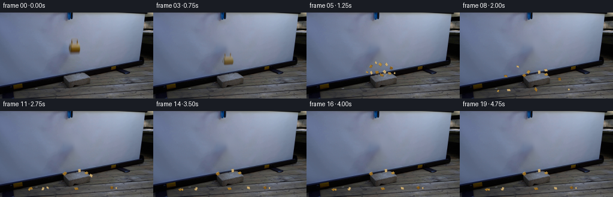
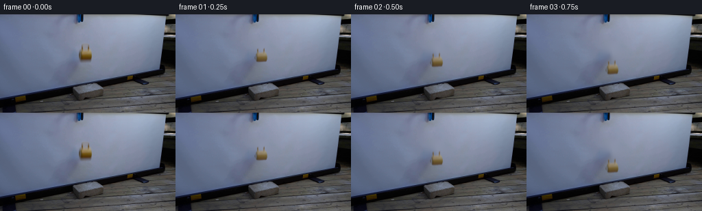
展开代码变化
--- 上一保存版本
+++ 本次保存版本
@@ -34,63 +34,32 @@
def draw_mug(base, cx, cy, angle=0.0, crack=False, motion=0.0):
- """Small glazed ochre mug, matching the soft focus and scale in frame zero."""
- S = 4
- size = 38 * S
- mug = Image.new('RGBA', (size, size), (0, 0, 0, 0))
- # Shadow on the projection screen, rendered separately and following the object.
- sh = Image.new('RGBA', (W*S, H*S), (0,0,0,0))
- sd = ImageDraw.Draw(sh)
- sx, sy = int((cx-1)*S), int((cy+5)*S)
- sd.ellipse((sx-12*S, sy-10*S, sx+13*S, sy+12*S), fill=(29,25,27,57))
- sh = sh.filter(ImageFilter.GaussianBlur(3.0*S))
- sh = sh.resize((W,H), Image.Resampling.LANCZOS)
- out = layer_rgba(base, sh)
-
- d = ImageDraw.Draw(mug)
- ox = oy = size//2
- # Handle at the left of the cup: dark inner opening and glazed outer rim.
- d.ellipse((ox-13*S, oy-5*S, ox-1*S, oy+10*S), fill=(126,92,34,255))
- d.ellipse((ox-10*S, oy-2*S, ox-3*S, oy+7*S), fill=(74,64,52,230))
- d.ellipse((ox-8*S, oy-1*S, ox-3*S, oy+6*S), fill=(139,109,59,160))
- # Body, slightly tapered toward the base.
- body = [(ox-6*S,oy-7*S),(ox+9*S,oy-7*S),(ox+10*S,oy-4*S),
- (ox+9*S,oy+9*S),(ox+6*S,oy+12*S),(ox-4*S,oy+12*S),
- (ox-7*S,oy+8*S)]
- d.polygon(body, fill=(145,108,35,255))
- # Warm vertical glaze gradient.
- for yy in range(-6*S, 11*S):
- q=(yy+6*S)/(17*S)
- col=(int(171-77*q), int(140-78*q), int(76-52*q), 245)
- xleft = ox-6*S + int(max(0,yy-7*S)*0.05)
- xright= ox+9*S - int(max(0,yy-7*S)*0.04)
- d.line((xleft,oy+yy,xright,oy+yy), fill=col, width=1)
- # Lip and top opening.
- d.ellipse((ox-6*S,oy-9*S,ox+9*S,oy-4*S), fill=(181,151,93,255))
- d.ellipse((ox-5*S,oy-8*S,ox+8*S,oy-5*S), fill=(102,74,32,255))
- d.arc((ox-5*S,oy-8*S,ox+8*S,oy-4*S), 185, 355, fill=(215,190,133,255), width=S)
- # Narrow highlight and darker base.
- d.rounded_rectangle((ox-4*S,oy-4*S,ox-2*S,oy+7*S), radius=S, fill=(191,155,81,100))
- d.line((ox-4*S,oy+10*S,ox+6*S,oy+10*S), fill=(73,48,18,210), width=2*S)
+ """Move a color-keyed cutout of the actual source mug."""
+ src = np.asarray(Image.open(CASE_DIR/'first_frame.png').convert('RGB'))
+ x0,y0,x1,y1 = 106,36,142,76
+ patch = src[y0:y1,x0:x1]
+ rr=patch[:,:,0].astype(np.float32); gg=patch[:,:,1].astype(np.float32); bb=patch[:,:,2].astype(np.float32)
+ # Ochre ceramic is red/yellow relative to the cool blue screen.
+ score=(rr-bb)+0.35*(gg-bb)
+ alpha=np.clip((score-7.0)*7.5,0,255).astype(np.uint8)
+ alpha=cv2.GaussianBlur(alpha,(3,3),0.45)
+ mug=Image.fromarray(np.dstack([patch,alpha]),'RGBA')
if crack:
- d.line((ox+2*S,oy-4*S,ox*S//S+1*S,oy+2*S,ox+5*S,oy+5*S,ox+2*S,oy+9*S),
- fill=(68,47,25,245), width=max(2,S//2))
- # Slight optical softness matches source footage.
- mug = mug.filter(ImageFilter.GaussianBlur(0.55*S))
- if motion > 0:
- # Exposure blur along vertical fall: stack faint neighboring copies.
- canv = Image.new('RGBA', mug.size, (0,0,0,0))
- for off, a in [(-motion,55),(0,160),(motion,55)]:
- tmp = mug.copy()
- alpha=np.asarray(tmp.getchannel('A'),dtype=np.float32)*(a/270.0)
- tmp.putalpha(Image.fromarray(np.clip(alpha,0,255).astype(np.uint8)))
- canv.alpha_composite(tmp,(0,int(off*S)))
+ md=ImageDraw.Draw(mug)
+ md.line((19,13,18,20,22,24,19,30),fill=(53,39,27,245),width=1)
+ if motion>0:
+ canv=Image.new('RGBA',mug.size,(0,0,0,0))
+ for off,a in [(-motion,52),(0,170),(motion,52)]:
+ tmp=mug.copy()
+ aa=np.asarray(tmp.getchannel('A'),dtype=np.float32)*(a/274.0)
+ tmp.putalpha(Image.fromarray(np.clip(aa,0,255).astype(np.uint8)))
+ canv.alpha_composite(tmp,(0,int(round(off))))
mug=canv
- mug = mug.rotate(angle, resample=Image.Resampling.BICUBIC, expand=False)
- mug = mug.resize((38,38), Image.Resampling.LANCZOS)
- ov = Image.new('RGBA',(W,H),(0,0,0,0))
- ov.alpha_composite(mug,(int(round(cx-19)),int(round(cy-19))))
- return layer_rgba(out,ov)
+ mug=mug.rotate(angle,resample=Image.Resampling.BICUBIC,expand=False)
+ ov=Image.new('RGBA',(W,H),(0,0,0,0))
+ # Source silhouette center is approximately (124,58.5).
+ ov.alpha_composite(mug,(int(round(cx-(124-x0))),int(round(cy-(58.5-y0)))))
+ return layer_rgba(base,ov)
# Fragments use deterministic rigid-body trajectories integrated against the brick and floor.
候选 03播放与检查图
点击播放 · 原生 RGB 像素

展开代码变化
--- 上一保存版本 +++ 本次保存版本 @@ -11,20 +11,24 @@ def make_clean_plate(src): - """Remove only the suspended cup from the locked camera plate.""" - mask = np.zeros((H, W), np.uint8) - # Full blurred silhouette and its soft cast shadow. - cv2.ellipse(mask, (123, 58), (15, 18), 0, 0, 360, 255, -1) - cv2.rectangle(mask, (115, 42), (133, 70), 255, -1) - mask = cv2.dilate(mask, np.ones((3, 3), np.uint8), iterations=1) - plate = cv2.inpaint(src, mask, 5, cv2.INPAINT_TELEA) - # Projection-screen texture is extremely low-frequency. A softly cloned - # local patch suppresses the slight inpaint swirl while retaining its light falloff. - smooth = cv2.GaussianBlur(plate, (0, 0), 3.0) - soft = cv2.GaussianBlur(mask, (0, 0), 4.0).astype(np.float32) / 255.0 - soft = soft[..., None] * 0.42 - plate = np.clip(plate * (1-soft) + smooth * soft, 0, 255).astype(np.uint8) - return plate + """Remove the cup while keeping the real soft cast shadow on the screen.""" + plate=src.copy().astype(np.float32) + x0,x1,y0,y1=106,142,36,76 + # Reconstruct the low-frequency blue projection screen from adjacent pixels. + fill=plate.copy() + for y in range(y0,y1): + left=src[y,101:109].mean(axis=0); right=src[y,140:148].mean(axis=0) + for x in range(x0,x1): + q=(x-x0)/max(1,x1-x0-1) + fill[y,x]=left*(1-q)+right*q + # Tight matte removes ceramic; feathering preserves the broad natural shadow. + patch=src[y0:y1,x0:x1] + rr=patch[:,:,0].astype(float); gg=patch[:,:,1].astype(float); bb=patch[:,:,2].astype(float) + key=np.clip(((rr-bb)+0.35*(gg-bb)-4.0)*.13,0,1) + matte=np.zeros((H,W),float); matte[y0:y1,x0:x1]=key + matte=cv2.GaussianBlur(matte,(0,0),0.65)[...,None] + plate=plate*(1-matte)+fill*matte + return np.uint8(np.clip(plate,0,255)) def layer_rgba(base, overlay):

候选 05播放与检查图
点击播放 · 原生 RGB 像素
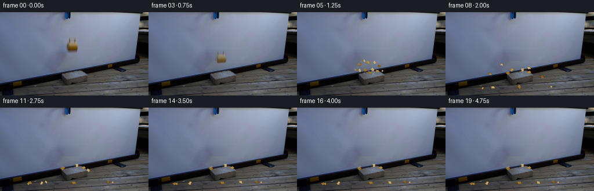
展开代码变化
--- 上一保存版本
+++ 本次保存版本
@@ -11,23 +11,21 @@
def make_clean_plate(src):
- """Remove the cup while keeping the real soft cast shadow on the screen."""
+ """Remove the cup and its small local shadow from the locked screen plate."""
plate=src.copy().astype(np.float32)
- x0,x1,y0,y1=106,142,36,76
- # Reconstruct the low-frequency blue projection screen from adjacent pixels.
fill=plate.copy()
+ x0,x1,y0,y1=101,147,32,84
+ # The screen is a smoothly lit surface: interpolate each scanline from clean
+ # samples immediately to either side, retaining the source's vertical falloff.
for y in range(y0,y1):
- left=src[y,101:109].mean(axis=0); right=src[y,140:148].mean(axis=0)
+ left=src[y,96:103].mean(axis=0); right=src[y,145:152].mean(axis=0)
for x in range(x0,x1):
q=(x-x0)/max(1,x1-x0-1)
fill[y,x]=left*(1-q)+right*q
- # Tight matte removes ceramic; feathering preserves the broad natural shadow.
- patch=src[y0:y1,x0:x1]
- rr=patch[:,:,0].astype(float); gg=patch[:,:,1].astype(float); bb=patch[:,:,2].astype(float)
- key=np.clip(((rr-bb)+0.35*(gg-bb)-4.0)*.13,0,1)
- matte=np.zeros((H,W),float); matte[y0:y1,x0:x1]=key
- matte=cv2.GaussianBlur(matte,(0,0),0.65)[...,None]
- plate=plate*(1-matte)+fill*matte
+ mask=np.zeros((H,W),np.float32)
+ cv2.ellipse(mask,(124,59),(23,27),0,0,360,1,-1)
+ mask=cv2.GaussianBlur(mask,(0,0),2.0)[...,None]
+ plate=plate*(1-mask)+fill*mask
return np.uint8(np.clip(plate,0,255))
可观测工具轨迹
实际执行的命令与返回图片。
命令 1exit 0
/bin/bash -lc "cat prompt.txt && printf '\\n---RULES---\\n' && cat GENERATION_RULES.md && printf '\\n---FILES---\\n' && find . -maxdepth 2 -type f -printf '%p\\n' | sort"
命令 2exit 0
/bin/bash -lc "python - <<'PY'
from PIL import Image
im=Image.open('first_frame.png')
im.crop((95,0,145,130)).resize((400,1040)).save('.tmp/crop.png')
print(im.mode, im.size)
PY"命令 3exit 0
/bin/bash -lc "sed -n '1,240p' artifact_io.py"
命令 4exit 0
/bin/bash -lc "python - <<'PY'
from PIL import Image
im=Image.open('first_frame.png')
im.crop((105,34,143,78)).resize((760,880),Image.Resampling.NEAREST).save('.tmp/mug_nearest.png')
PY"命令 5exit 0
/bin/bash -lc "python - <<'PY'
try:
import cv2; print('cv2',cv2.__version__)
except Exception as e: print(e)
PY"命令 6exit 0
/bin/bash -lc "python - <<'PY'
from PIL import Image
import numpy as np
im=np.array(Image.open('first_frame.png'))
for y in range(38,77,3):
print(y, [(x,im[y,x].tolist()) for x in range(109,139,3)])
PY"命令 7exit 0
/bin/bash -lc "cat > generate.py <<'PY'
from pathlib import Path
import math
import cv2
import numpy as np
from PIL import Image, ImageDraw, ImageFilter
import artifact_io
CASE_DIR = Path(__file__).resolve().parent
W, H = 256, 144
N, FPS = 20, 4
def make_clean_plate(src):
\"\"\"Remove only the suspended cup from the locked camera plate.\"\"\"
mask = np.zeros((H, W), np.uint8)
# Full blurred silhouette and its soft cast shadow.
cv2.ellipse(mask, (123, 58), (15, 18), 0, 0, 360, 255, -1)
cv2.rectangle(mask, (115, 42), (133, 70), 255, -1)
mask = cv2.dilate(mask, np.ones((3, 3), np.uint8), iterations=1)
plate = cv2.inpaint(src, mask, 5, cv2.INPAINT_TELEA)
# Projection-screen texture is extremely low-frequency. A softly cloned
# local patch suppresses the slight inpaint swirl while retaining its light falloff.
smooth = cv2.GaussianBlur(plate, (0, 0), 3.0)
soft = cv2.GaussianBlur(mask, (0, 0), 4.0).astype(np.float32) / 255.0
soft = soft[..., None] * 0.42
plate = np.clip(plate * (1-soft) + smooth * soft, 0, 255).astype(np.uint8)
return plate
def layer_rgba(base, overlay):
b = Image.fromarray(base, 'RGB').convert('RGBA')
b.alpha_composite(overlay)
return np.asarray(b.convert('RGB'), dtype=np.uint8)
def draw_mug(base, cx, cy, angle=0.0, crack=False, motion=0.0):
\"\"\"Small glazed ochre mug, matching the soft focus and scale in frame zero.\"\"\"
S = 4
size = 38 * S
mug = Image.new('RGBA', (size, size), (0, 0, 0, 0))
# Shadow on the projection screen, rendered separately and following the object.
sh = Image.new('RGBA', (W*S, H*S), (0,0,0,0))
sd = ImageDraw.Draw(sh)
sx, sy = int((cx-1)*S), int((cy+5)*S)
sd.ellipse((sx-12*S, sy-10*S, sx+13*S, sy+12*S), fill=(29,25,27,57))
sh = sh.filter(ImageFilter.GaussianBlur(3.0*S))
sh = sh.resize((W,H), Image.Resampling.LANCZOS)
out = layer_rgba(base, sh)
d = ImageDraw.Draw(mug)
ox = oy = size//2
# Handle at the left of the cup: dark inner opening and glazed outer rim.
d.ellipse((ox-13*S, oy-5*S, ox-1*S, oy+10*S), fill=(126,92,34,255))
d.ellipse((ox-10*S, oy-2*S, ox-3*S, oy+7*S), fill=(74,64,52,230))
d.ellipse((ox-8*S, oy-1*S, ox-3*S, oy+6*S), fill=(139,109,59,160))
# Body, slightly tapered toward the base.
body = [(ox-6*S,oy-7*S),(ox+9*S,oy-7*S),(ox+10*S,oy-4*S),
(ox+9*S,oy+9*S),(ox+6*S,oy+12*S),(ox-4*S,oy+12*S),
(ox-7*S,oy+8*S)]
d.polygon(body, fill=(145,108,35,255))
# Warm vertical glaze gradient.
for yy in range(-6*S, 11*S):
q=(yy+6*S)/(17*S)
col=(int(171-77*q), int(140-78*q), int(76-52*q), 245)
xleft = ox-6*S + int(max(0,yy-7*S)*0.05)
xright= ox+9*S - int(max(0,yy-7*S)*0.04)
d.line((xleft,oy+yy,xright,oy+yy), fill=col, width=1)
# Lip and top opening.
d.ellipse((ox-6*S,oy-9*S,ox+9*S,oy-4*S), fill=(181,151,93,255))
d.ellipse((ox-5*S,oy-8*S,ox+8*S,oy-5*S), fill=(102,74,32,255))
d.arc((ox-5*S,oy-8*S,ox+8*S,oy-4*S), 185, 355, fill=(215,190,133,255), width=S)
# Narrow highlight and darker base.
d.rounded_rectangle((ox-4*S,oy-4*S,ox-2*S,oy+7*S), radius=S, fill=(191,155,81,100))
d.line((ox-4*S,oy+10*S,ox+6*S,oy+10*S), fill=(73,48,18,210), width=2*S)
if crack:
d.line((ox+2*S,oy-4*S,ox*S//S+1*S,oy+2*S,ox+5*S,oy+5*S,ox+2*S,oy+9*S),
fill=(68,47,25,245), width=max(2,S//2))
# Slight optical softness matches source footage.
mug = mug.filter(ImageFilter.GaussianBlur(0.55*S))
if motion > 0:
# Exposure blur along vertical fall: stack faint neighboring copies.
canv = Image.new('RGBA', mug.size, (0,0,0,0))
for off, a in [(-motion,55),(0,160),(motion,55)]:
tmp = mug.copy()
alpha=np.asarray(tmp.getchannel('A'),dtype=np.float32)*(a/270.0)
tmp.putalpha(Image.fromarray(np.clip(alpha,0,255).astype(np.uint8)))
canv.alpha_composite(tmp,(0,int(off*S)))
mug=canv
mug = mug.rotate(angle, resample=Image.Resampling.BICUBIC, expand=False)
mug = mug.resize((38,38), Image.Resampling.LANCZOS)
ov = Image.new('RGBA',(W,H),(0,0,0,0))
ov.alpha_composite(mug,(int(round(cx-19)),int(round(cy-19))))
return layer_rgba(out,ov)
# Fragments use deterministic rigid-body trajectories integrated against the brick and floor.
FRAGMENTS = [
# x,y, vx,vy, w,h, angle, spin, face (0 exterior, 1 pale broken ceramic)
(-7,-4,-41,-39,6,4,-10,-155,0), (-3,-7,-25,-52,5,3,15,190,1),
( 1,-6,-11,-44,5,6,-4,-120,0), ( 5,-5, 14,-48,6,4,23,165,1),
( 8,-2, 34,-36,5,5,-12,205,0), (-8, 2,-35,-20,4,6,35,-175,1),
(-3, 3,-17,-27,6,5,-25,120,0), ( 3, 3, 10,-30,5,6,12,-145,1),
( 7, 4, 27,-23,6,4,-15,180,0), ( 0, 5, 2,-17,7,4,5,95,0),
(10, 2, 48,-18,3,3,0,250,1), (-11,0,-50,-16,3,4,0,-230,0),
]
def brick_top(x):
if x < 104 or x > 152: return None
if x <= 134: return 108.0 - 6.0*(x-104.0)/30.0
return 102.0 + 6.0*(x-134.0)/18.0
def floor_y(x):
# Floorboards recede gently upward to the right in this camera view.
return 132.0 - 0.020*(x-128.0)
def particle_state(spec, t):
rx,ry,vx,vy,w,h,a,spin,face=spec
x=125.0+rx; y=101.0+ry
dt=1/120
elapsed=0.0
restitution=0.38
while elapsed < t-1e-9:
step=min(dt,t-elapsed)
oldy=y
vy += 96.0*step
x += vx*step; y += vy*step
top=brick_top(x)
if top is not None and vy>0 and oldy <= top-1 and y+h*.35 >= top:
y=top-h*.35
vy=-abs(vy)*restitution
vx*=0.76; spin*=0.72
if abs(vy)<8: vy=0
fy=floor_y(x)
if vy>0 and y+h*.45>=fy:
y=fy-h*.45
vy=-abs(vy)*0.28
vx*=0.67; spin*=0.62
if abs(vy)<7: vy=0
# friction once essentially resting
if vy==0:
vx*=max(0,1-3.0*step)
elapsed += step
return x,y,a+spin*t,w,h,face
def polygon_fragment(draw, x,y,w,h,ang,fill,edge):
ca=math.cos(math.radians(ang)); sa=math.sin(math.radians(ang))
pts0=[(-w*.55,-h*.32),(w*.28,-h*.56),(w*.57,h*.18),(-w*.18,h*.55)]
pts=[(x+px*ca-py*sa,y+px*sa+py*ca) for px,py in pts0]
draw.polygon(pts,fill=fill)
draw.line(pts+[pts[0]],fill=edge,width=1)
# Bright irregular fracture edge.
draw.line([pts[0],pts[1]],fill=(218,194,143,220),width=1)
def draw_shatter(base, t):
S=4
ov=Image.new('RGBA',(W*S,H*S),(0,0,0,0))
d=ImageDraw.Draw(ov,'RGBA')
# Brief impact dust/chalk specks, strongest just after contact.
if t < 0.8:
strength=max(0,1-t/0.8)
for k in range(15):
theta=(k*2.399)+0.4
r=(5+17*t)*(0.35+(k%5)/5)
x=(125+math.cos(theta)*r)*S
y=(104-3*t+math.sin(theta)*r*.34)*S
rad=(0.7+(k%3)*.38)*S*(0.7+strength*.3)
d.ellipse((x-rad,y-rad,x+rad,y+rad),fill=(190,184,168,int(65*strength)))
# Tiny chips omitted after they have settled visually into the floor texture.
for j,spec in enumerate(FRAGMENTS):
x,y,a,w,h,face=particle_state(spec,t)
if face:
fill=(194,165,109,255); edge=(91,66,30,245)
else:
shades=[(150,108,37,255),(130,89,25,255),(174,135,58,255)]
fill=shades[j%3]; edge=(74,48,17,245)
pts_layer=Image.new('RGBA',(W*S,H*S),(0,0,0,0))
pd=ImageDraw.Draw(pts_layer,'RGBA')
polygon_fragment(pd,x*S,y*S,w*S,h*S,a,fill,edge)
ov=Image.alpha_composite(ov,pts_layer)
ov=ov.resize((W,H),Image.Resampling.LANCZOS)
return layer_rgba(base,ov)
def main():
src=np.asarray(Image.open(CASE_DIR/'first_frame.png').convert('RGB'),dtype=np.uint8)
plate=make_clean_plate(src)
frames=[]
impact_frame=4
for i in range(N):
if i==0:
frame=src.copy() # contract: pixel-identical first frame
elif i < impact_frame:
t=i/FPS
cy=59.0+37.0*t*t
cx=124.0+0.65*t
frame=draw_mug(plate,cx,cy,angle=2.2*t,motion=min(1.2,2.0*t))
elif i==impact_frame:
frame=draw_mug(plate,124.8,95.6,angle=4.0,crack=True,motion=.65)
else:
t=(i-impact_frame)/FPS
frame=draw_shatter(plate,t)
frames.append(frame)
frames=np.stack(frames).astype(np.uint8)
assert np.array_equal(frames[0],src)
artifact_io.save(frames,CASE_DIR)
if __name__=='__main__':
main()
PY
python generate.py
python - <<'PY'
from PIL import Image
import numpy as np
im=np.asarray(Image.open('first_frame.png'))
f=np.asarray(Image.open('frames/00.png'))
print('identical',np.array_equal(im,f), 'shape',f.shape)
PY"命令 8exit 0
/bin/bash -lc "python - <<'PY'
from PIL import Image
import numpy as np, cv2
im=np.array(Image.open('first_frame.png'))
c=im[36:76,106:142]
r,g,b=c[:,:,0].astype(float),c[:,:,1].astype(float),c[:,:,2].astype(float)
s=(r-b)+.35*(g-b)
a=np.clip((s-8)*7,0,255).astype('uint8')
# constrain likely silhouette manually union threshold and known polygon? save
out=np.dstack([c,a]); Image.fromarray(out).resize((360,400)).save('.tmp/extract.png')
Image.fromarray(a).resize((360,400)).save('.tmp/alpha.png')
PY"命令 9exit 0
/bin/bash -lc "python - <<'PY'
import cv2, numpy as np
from PIL import Image
s=np.array(Image.open('first_frame.png'))
for k,(rx,ry,cx,cy) in enumerate([(24,28,120,63),(30,33,118,64),(34,38,118,65)]):
m=np.zeros((144,256),np.uint8); cv2.ellipse(m,(cx,cy),(rx,ry),0,0,360,255,-1)
p=cv2.inpaint(s,m,7,cv2.INPAINT_TELEA)
Image.fromarray(p).save(f'.tmp/plate{k}.png')
PY"命令 10exit 0
/bin/bash -lc "python - <<'PY'
import cv2,numpy as np
from PIL import Image
s=np.array(Image.open('first_frame.png'))
# pixel inspect row/col smooth reconstruction interpolation from left/right neighborhoods
p=s.copy().astype(float)
x0,x1=106,142;y0,y1=34,82
# each row line interpolation with textured edges
for y in range(y0,y1):
l=s[y,101:109].mean(0); r=s[y,140:148].mean(0)
for x in range(x0,x1):
q=(x-x0)/(x1-x0-1); p[y,x]=l*(1-q)+r*q
# gaussian local blend
mask=np.zeros((144,256),float); cv2.ellipse(mask,(124,59),(20,23),0,0,360,1,-1);mask=cv2.GaussianBlur(mask,(0,0),3)[...,None]
p=p*mask+s*(1-mask)
Image.fromarray(np.uint8(np.clip(p,0,255))).save('.tmp/interp.png')
PY"命令 11exit 0
/bin/bash -lc "python - <<'PY'
from pathlib import Path
p=Path('generate.py')
s=p.read_text()
start=s.index('def draw_mug(')
end=s.index('\\n\\n# Fragments',start)
new=r'''def draw_mug(base, cx, cy, angle=0.0, crack=False, motion=0.0):
\"\"\"Move a color-keyed cutout of the actual source mug.\"\"\"
src = np.asarray(Image.open(CASE_DIR/'first_frame.png').convert('RGB'))
x0,y0,x1,y1 = 106,36,142,76
patch = src[y0:y1,x0:x1]
rr=patch[:,:,0].astype(np.float32); gg=patch[:,:,1].astype(np.float32); bb=patch[:,:,2].astype(np.float32)
# Ochre ceramic is red/yellow relative to the cool blue screen.
score=(rr-bb)+0.35*(gg-bb)
alpha=np.clip((score-7.0)*7.5,0,255).astype(np.uint8)
alpha=cv2.GaussianBlur(alpha,(3,3),0.45)
mug=Image.fromarray(np.dstack([patch,alpha]),'RGBA')
if crack:
md=ImageDraw.Draw(mug)
md.line((19,13,18,20,22,24,19,30),fill=(53,39,27,245),width=1)
if motion>0:
canv=Image.new('RGBA',mug.size,(0,0,0,0))
for off,a in [(-motion,52),(0,170),(motion,52)]:
tmp=mug.copy()
aa=np.asarray(tmp.getchannel('A'),dtype=np.float32)*(a/274.0)
tmp.putalpha(Image.fromarray(np.clip(aa,0,255).astype(np.uint8)))
canv.alpha_composite(tmp,(0,int(round(off))))
mug=canv
mug=mug.rotate(angle,resample=Image.Resampling.BICUBIC,expand=False)
ov=Image.new('RGBA',(W,H),(0,0,0,0))
# Source silhouette center is approximately (124,58.5).
ov.alpha_composite(mug,(int(round(cx-(124-x0))),int(round(cy-(58.5-y0)))))
return layer_rgba(base,ov)
'''
p.write_text(s[:start]+new+s[end:])
PY
python generate.py"命令 12exit 0
/bin/bash -lc "python - <<'PY'
from pathlib import Path
p=Path('generate.py');s=p.read_text()
s=s.replace(\"def make_clean_plate(src):\\n \\\"\\\"\\\"Remove only the suspended cup from the locked camera plate.\\\"\\\"\\\"\\n mask = np.zeros((H, W), np.uint8)\\n # Full blurred silhouette and its soft cast shadow.\\n cv2.ellipse(mask, (123, 58), (15, 18), 0, 0, 360, 255, -1)\\n cv2.rectangle(mask, (115, 42), (133, 70), 255, -1)\\n mask = cv2.dilate(mask, np.ones((3, 3), np.uint8), iterations=1)\\n plate = cv2.inpaint(src, mask, 5, cv2.INPAINT_TELEA)\\n # Projection-screen texture is extremely low-frequency. A softly cloned\\n # local patch suppresses the slight inpaint swirl while retaining its light falloff.\\n smooth = cv2.GaussianBlur(plate, (0, 0), 3.0)\\n soft = cv2.GaussianBlur(mask, (0, 0), 4.0).astype(np.float32) / 255.0\\n soft = soft[..., None] * 0.42\\n plate = np.clip(plate * (1-soft) + smooth * soft, 0, 255).astype(np.uint8)\\n return plate\",'''def make_clean_plate(src):
\"\"\"Remove the cup while keeping the real soft cast shadow on the screen.\"\"\"
plate=src.copy().astype(np.float32)
x0,x1,y0,y1=106,142,36,76
# Reconstruct the low-frequency blue projection screen from adjacent pixels.
fill=plate.copy()
for y in range(y0,y1):
left=src[y,101:109].mean(axis=0); right=src[y,140:148].mean(axis=0)
for x in range(x0,x1):
q=(x-x0)/max(1,x1-x0-1)
fill[y,x]=left*(1-q)+right*q
# Tight matte removes ceramic; feathering preserves the broad natural shadow.
patch=src[y0:y1,x0:x1]
rr=patch[:,:,0].astype(float); gg=patch[:,:,1].astype(float); bb=patch[:,:,2].astype(float)
key=np.clip(((rr-bb)+0.35*(gg-bb)-4.0)*.13,0,1)
matte=np.zeros((H,W),float); matte[y0:y1,x0:x1]=key
matte=cv2.GaussianBlur(matte,(0,0),0.65)[...,None]
plate=plate*(1-matte)+fill*matte
return np.uint8(np.clip(plate,0,255))''')
p.write_text(s)
PY
python generate.py
python - <<'PY'
from PIL import Image
import numpy as np
f=np.array(Image.open('frames/00.png'));s=np.array(Image.open('first_frame.png'))
print(np.array_equal(f,s),np.load('pixels.npz')['pixels'].shape)
PY"命令 13exit 0
/bin/bash -lc "python - <<'PY'
from pathlib import Path
p=Path('generate.py');s=p.read_text()
start=s.index('def make_clean_plate')
end=s.index('\\n\\ndef layer_rgba',start)
new='''def make_clean_plate(src):
\"\"\"Remove the cup and its small local shadow from the locked screen plate.\"\"\"
plate=src.copy().astype(np.float32)
fill=plate.copy()
x0,x1,y0,y1=101,147,32,84
# The screen is a smoothly lit surface: interpolate each scanline from clean
# samples immediately to either side, retaining the source's vertical falloff.
for y in range(y0,y1):
left=src[y,96:103].mean(axis=0); right=src[y,145:152].mean(axis=0)
for x in range(x0,x1):
q=(x-x0)/max(1,x1-x0-1)
fill[y,x]=left*(1-q)+right*q
mask=np.zeros((H,W),np.float32)
cv2.ellipse(mask,(124,59),(23,27),0,0,360,1,-1)
mask=cv2.GaussianBlur(mask,(0,0),2.0)[...,None]
plate=plate*(1-mask)+fill*mask
return np.uint8(np.clip(plate,0,255))
'''
p.write_text(s[:start]+new+s[end:])
PY
python generate.py"命令 14exit 0
/bin/bash -lc "ls -lh generate.py pixels.npz index.html frames/00.png frames/19.png inspection.png && python -m py_compile generate.py && python - <<'PY'
from PIL import Image
import numpy as np
fs=[]
for i in range(20): fs.append(np.array(Image.open(f'frames/{i:02d}.png')))
a=np.stack(fs)
print(a.shape,a.dtype,'first_exact',np.array_equal(a[0],np.array(Image.open('first_frame.png'))),'range',a.min(),a.max())
PY"视觉工具实际返回图片 1

视觉工具实际返回图片 2
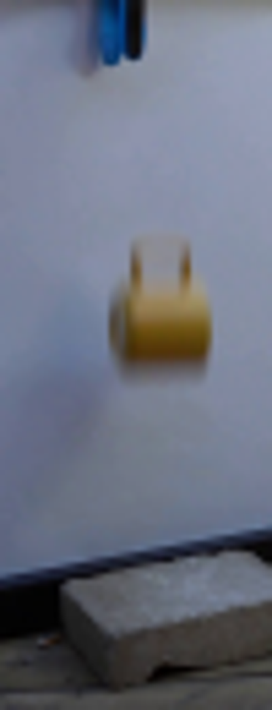
视觉工具实际返回图片 3
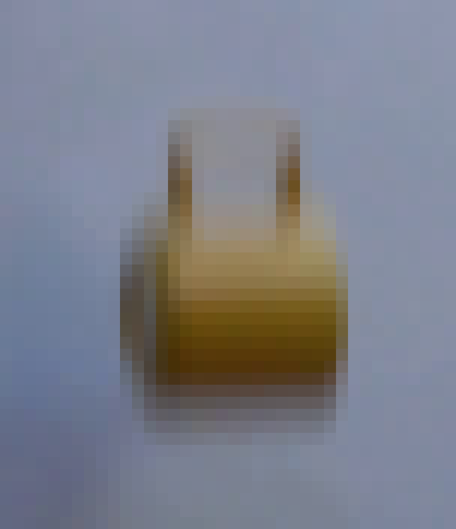
视觉工具实际返回图片 4

视觉工具实际返回图片 5
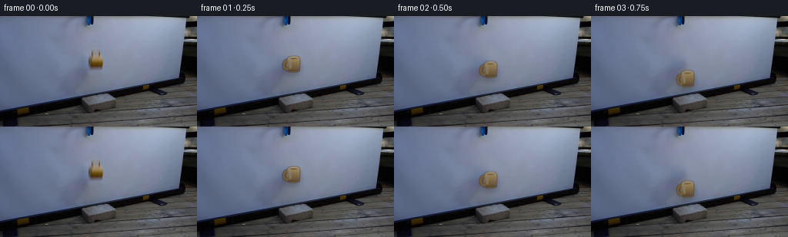
视觉工具实际返回图片 6
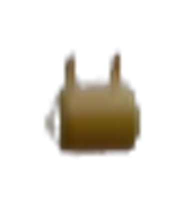
视觉工具实际返回图片 7
视觉工具实际返回图片 8
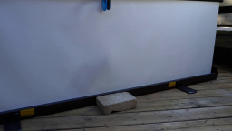
视觉工具实际返回图片 9
视觉工具实际返回图片 10
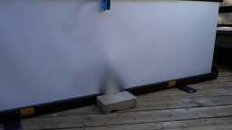
视觉工具实际返回图片 11
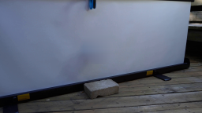
视觉工具实际返回图片 12

视觉工具实际返回图片 13

视觉工具实际返回图片 14
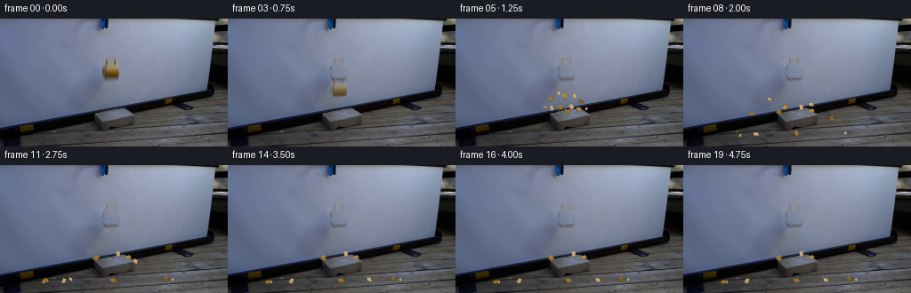
视觉工具实际返回图片 15

保存候选 5 份；完成命令 14 次；可验证图片返回 15 张。原始 API 响应与完整日志保留在本地。